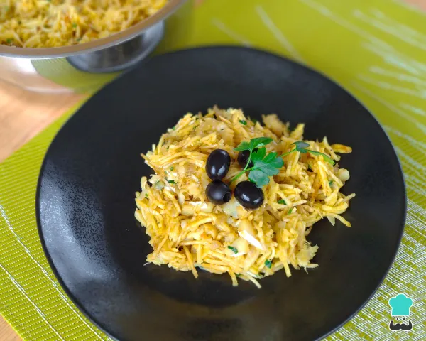

Bacalhau à Brás

Description:
Bacalhau à Brás is one of the most popular codfish dishes in Portugal, and you can prepare it at home very easily and quickly! In some places, this dish is also known as "bacalhau dourado" and consists of a creamy mix of potato sticks, sautéed codfish, and scrambled eggs.
Ingredients:
- 400g of shredded desalted cod
- 200g of shoestring potato
- 1 diced onion
- 2 chopped garlic clovers
- 2 bay leaves
- 3 spoons of olive oil
- 4 medium eggs
- 1 pinch of salt
- 1 pinch of pepper
- parsley
- black olives
Process:
- Start by heating a deep frying pan or large pot with olive oil, onion, garlic, and bay leaves. Sauté over medium-low heat until the onion and garlic begin to golden.
- When this sauté becomes golden, add the codfish and increase the heat.
- Season with salt (optional) and freshly ground black pepper. Mix everything and let the codfish cook for 5-10 minutes without covering, stirring occasionally to help evaporate the water released by the codfish.
- Meanwhile, beat the eggs in a bowl using a fork and season with a little salt and pepper.
- When the codfish has dried up, remove the bay leaves and lower the heat completely or turn it off. Add chopped parsley to taste and mix. Also, add the potato sticks (batata palha) and the beaten eggs, and stir everything immediately.
- Mixing the potato and eggs with the codfish needs to be a quick procedure to maintain the crispiness of the potato and avoid the eggs from coagulating. Therefore, we advise turning off the heat and letting the eggs cook in the residual heat of the frying pan or pot. This is the trick to achieving a creamy and shiny Bacalhau à Brás!
- Serve immediately, so you won't lose the creaminess of the eggs and the crispiness of the potato. Decorate your Bacalhau à Brás with black olives and parsley. Enjoy your meal!